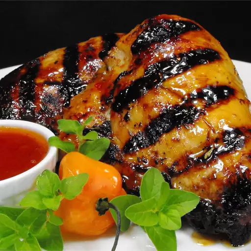

Recipes
Chicken

Description
Cherry Bomb Chicken
Ingredients
- 1 quart cold water
- ⅓ cup kosher salt
- 1 pinch white sugar
- 3 ⅓ cups all-purpose flour
- 1 pint cherry tomatoes
- 3 habanero peppers, seeded
Steps
-
Combine water, sugar, and kosher salt in a saucepan over low heat; cook
until sugar and salt dissolve, 4 to 5 minutes. Set aside until cooled to
room temperature.
-
Combine cherry tomatoes, habanero peppers, garlic, and allspice with
sugar and salt mixture in a blender; blend until smooth.
-
Pour tomato brine over chicken pieces, making sure all pieces are
covered. Cover bowl or container; refrigerate 4 to 6 hours. Remove
-
Brush chicken pieces with chili sauce; transfer to a plate and rest
before serving for 10 minutes.